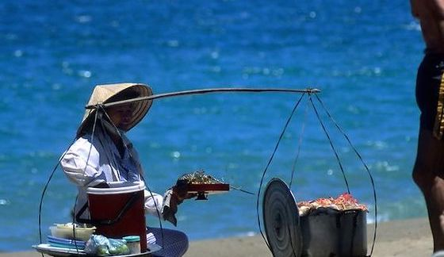

Ai đã từng đến Nha Trang sẽ không khỏi ấn tượng với vẻ đẹp thơ mộng, hiền hoà của biển trời xanh biếc và các bãi cát trắng mịn trải dài tăm tắp. Nhìn trên cao, bãi biển như một vầng trăng lưỡi liềm xanh dịu, bao bọc lấy thành phố.
1. Bạn sẽ ...:
Trên bờ, các rặng dừa và hàng phi lao tăm tắp trải dài còn bãi cát thì trắng mịn. Hướng mắt ra xa, ta sẽ thấy từng lớp sóng bạc cuồn cuộn đập vào bờ như chùm hoa tung bọt trắng xoá, tạo nên những âm thanh rì rào không dứt. Màu nước biển thì trong xanh. Khi chạm chân xuống biển, ta sẽ cảm nhận được ngay cái mát của nước luồn vào kẽ chân. Biển ở đây cứ như một chiếc radio, phát lên những tâm tư tình cảm không lời của bầu trời, rộng hơn là cả một mùa trong năm. Khi xuân đến, sóng biển lăn tăn, đăc biệt là những ngày có mưa, nước biển thêm xanh ngọc như vui vẻ tắm lấy cả mùa xuân. Hè về, sóng biển cũng mạnh dần, tạo ra âm thanh lúc rì rào, lúc oàm oạp. Nước biển thì luôn luôn mát rượi, xanh trong. Đây chính là khoảng thời gian thích hợp trong năm để du lịch Nha Trang,đặc biệt nếu bạn muốn chọn một Resort bãi biển, hay đơn thuần là tắm. Thu sang, nước biển cũng đục dần,giống như một cái cây cũng đến mùa thay lá. Sóng vào mùa này cũng dữ dội hơn, và người đi tắm biển cũng thưa dần. Những cơn mưa không dứt cũng là lời chào của mùa đông. Biển Nha Trang vào tời điểm này rát nguy hiểm cho bơi lội bởi vì màu biển xám xịt, sóng to, và mưa khiến cho người bơi bị khuất tầm nhìn. Vì thế, đửng tắm biển Nha Trang vào cuối năm nhé.

Một chuyến đi đến Nha Trang đã để lại trong lòng du khách nhiều khoảnh khắc đáng nhớ đó là một vùng biển, một vùng cát trắng với biết bao điều thú vị, kỷ niệm dấu yêu, khó phai mờ cho ai một lần đến với Nha Trang. Cuộc sống mới đã đem lại cho Nha Trang những sắc màu và âm thanh mới mẻ. Một thành phố tươi trẻ năng động trên đà phát triển, là địa điểm du lịch hấp dẫn của nhiều du khách trong và ngoài nước.
2. Địa chỉ
^(*-*)^, trải dài đường Trần Phú.
3. Nơi lấp đầy chiếc bụng rỗng tại hoặc gần đó:,
Những gánh hàng rong ngay trên bãi cát. Bạn sẽ được thưởng thức cái hương vị không thể nhầm lẫn của hút mắm tôm chấm với bánh tráng nướng, mấy quả chuối, miếng cồi dừa rim nước đường ngọt lịm và mẻ ngô nướng phết mỡ hành thơm bá cháy :>.
